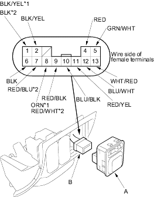

- Remove the power mirror switch (A).

*1: With defogger
*2: With Retract Mirror
- Disconnect the 13P connector (B) from the switch.
- Choose the appropriate test based on the symptom:
- Both mirrors do not work, go to step 5.
- Left mirror does not work, go to step 7.
- Right mirror does not work, go to step 8.
- Defogger does not work, go to step 9.
- Retract actuators do not work, go to step 9.
- Check for voltage between the No. 2 terminal and body ground with the ignition switch ON (II).
There should be battery voltage.
- If there is no battery voltage, check for:
- blown No. 14 (10A) fuse in the under-dash fuse/relay box.
- an open in the BLK/YEL wire.
- If there is battery voltage, go to step 6.
- Check for continuity between the No. 6 terminal and body ground.
There should be continuity.
- If there is no continuity, check for:
- an open in the BLK wire.
- poor ground (G501).
- If there is continuity, check both mirrors individually as described in the next column.
Left mirror
- Connect the No. 2 terminal to the No. 10 terminal and the No. 5 (or No. 12) terminal to body ground with jumper wires. The left mirror should tilt down (or swing left) with the ignition switch ON (II).
- If the mirror does not tilt down (or does not swing left), check for an open in the GRN/WHT (or BLU/WHT) wire between the left mirror and the 13P connector. If the wire is OK, check the left mirror actuator.
- If the mirror neither tilts down nor swings left, repair the BLU/BLK wire.
- If the mirror works properly, check the mirror switch.
Right mirror
- Connect the No. 2 terminal to the No. 11 terminal and the No. 5 (or No. 13) terminal to body ground with jumper wires. The right mirror should tilt down (or swing left) with the ignition switch ON (II).
- If the mirror does not tilt down (or does not swing left), check for an open in the GRN/WHT (or WHT/RED) wire between the right mirror and the 13P connector.
- If the wire is OK, check the right mirror actuator.
- If the mirror neither tilts down nor swings left, repair the RED/YEL wire.
- If the mirror works properly, check the mirror switch.